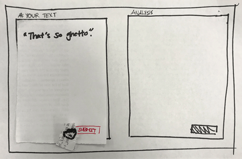
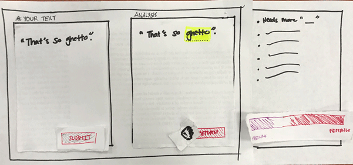

Title Page
Default Analysis Page
Typing in their language
Clicking to submit their text
Analysis of the Text
Hovering over the highlighted words
Returning back to the default page
From the storyboard, I've gained various inputs on how a user likes to navigate through the website. One suggestion for improving the website is possibly getting rid of title page as it takes too much real estate and there is already an assumption that the user is on the page knowing that they want to check their language usage. Another criticism was to improve the layout of the page by combining the three text fields into one as it can reduce clutter and make it more dynamic and interactive.